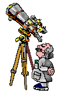

So how do we observe Jupiter? Take a small telescope and watch the moons
move. Mark down their position from night to night, or even hour to hour.
You won't see them go in circles around Jupiter; we are viewing their
orbits edge on, so they appear to go back and forth. But don't worry --
they are traveling in circles.
|
Some of them go around quickly, some go around more slowly, so you need
to watch them over both short periods and long, to be able to map out
the periods of all the satellites.
| 
|
So we go out and take a picture of Jupiter. We see some satellites on
one side, and some on the other. Then we come back the next day and see
that the positions have changed. But which one moved where? Based on two
observations, you don't know. So keep watching, and make a plot of
where the satellites are each night, or every few hours. After a while,
you'll see a pattern emerge: the sinusoidal pattern each satellite
makes as it travels around Jupiter. Then you fit a sine wave to its
motion and determine the period and the distance; from this you
calculate Jupiter's mass.
Sounds simple, right? Not so fast! When you observe the skies, you're
at the whim of nature. Sometimes there's this big bright thing up in
the sky -- we call it the Sun -- that makes it impossible to see Jupiter.
So you can't observe continuously, hour after hour. And then sometimes
it's cloudy and you can't see the skies.
That's life.
So often there
are gaps in your data and you just have to piece together your observations
as best you can.
That's the challenge of astronomy!